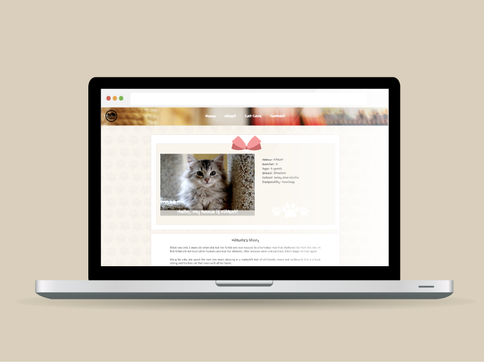
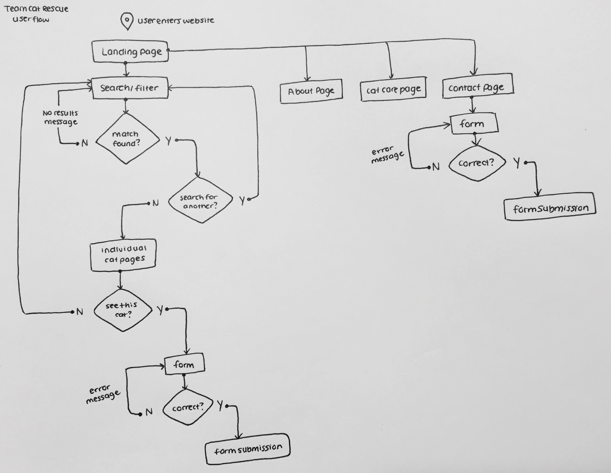
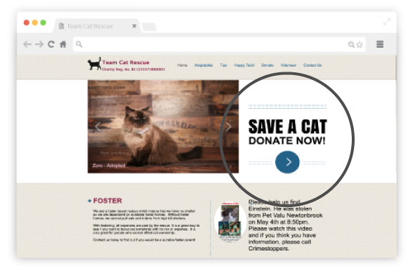

My Role
I led the design and project management role in a collaborative redesign for Team Cat Rescue’s site. I worked with a small team of developers and a designer.
I created the group wireframes and prototypes, driven by human-centered design principles. I worked on the 'About' page and the individual pages for each cat.
 The Challenge
Establishing Purpose
Team Cat Rescue’s current site lacks focus. The site emphasizes foster-based rescue for their cats but the Call-to-Action would send users to the donation page. The site is not optimal for mobile use.
We had 3 weeks to build a redesign for the site.
The Approach
Divergent-Convergent
// Exploration Phase (Divergent thinking): Each team member conducted market research and sketched our own ideas of how the site should look like. Learning to ask the right questions is pivotal to any design process in order to incorporate appropriate UX strategies.
// Refinement Phase (Convergent thinking): Next, we pitched our ideas and findings to the team and out group members. This helped us attain the feedback we needed to push our project forward.
//Outcome:
1) Simple/effective filtering system upon landing 2) Individual cat stories and success stories 3) Booking an appointment to see the cat
Reflection
What I learned
Through this project, I learned that collaboration goes beyond communication. It requires a mutual effort in setting attainable goals, creative problem solving and a streamlined approval process.
It was important to always have someone keep the purpose and goal of the project in check. The “What is this for” and “Are we building the right thing" rather than being too focused on what we are building. Creating is iterative.
I think that there is value in having clarity in not just the finished project but the intended experience you want the user to have.